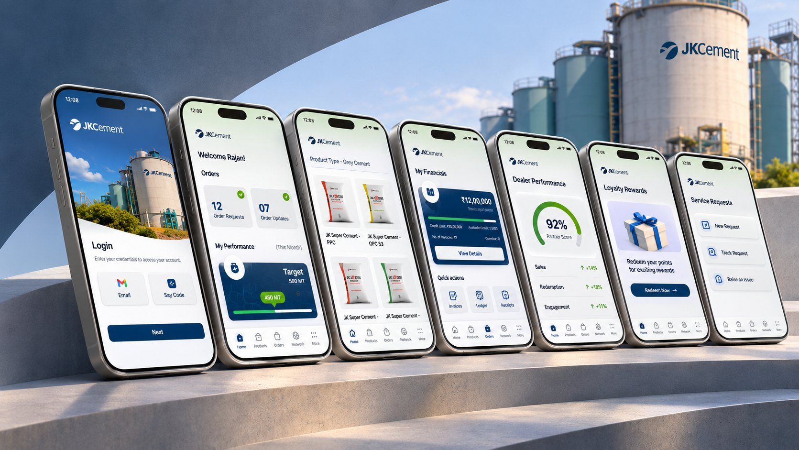

Orchestrating a 7-app enterprise transformation
Turning seven siloed application projects into one KPI-driven business transformation.
In collaboration with BCG, Salesforce & Stetig Engineering

The impact
Business outcomes
Program outcomes
- 35%increasein conversion across the partner ecosystem
- 65%improvementin task completion
- 45%reductionin support queries
- 8 → 3dayspartner onboarding time
- 5 organisations aligned around one roadmap
- 3 follow-on engagements
- Technical feasibility aligned before execution
- UX quality embedded into UAT
- Scope expansion secured through validated opportunity
Business outcomes reported by the partner at the 6-month checkpoint.
The challenge
JK Cement was transforming seven interconnected applications spanning its partner ecosystems. The program brought together multiple organisations, vendors, and workstreams, each with different requirements, assumptions, and priorities.
Seven applications, one ecosystem
- 1Sales
- 2Supply
- 3Dealer
- 4Retailer
- 5Contractor
- 6Influencer
- 7Partner
What made a unified direction hard
- Fragmented PRDs
- Evolving business expectations
- Unresolved technical dependencies
- No shared success metrics
My mandate: bring clarity, alignment, and delivery predictability to a complex enterprise transformation while keeping business outcomes at the centre.
Four decisions that shaped the program
-
01
Establishing one definition of success
The tensionWith 240+ requirements distributed across seven applications, individual workstreams risked optimising for their own deliverables.
What I didI synthesised the requirements into a shared Program Objective Map, aligning stakeholders around three measurable, ecosystem-wide KPIs.
240+ requirements across 7 apps
- Time to first transactionHow quickly partners reach their first successful transaction.
- Transaction conversion rateHow effectively users progress from intent to transaction.
- Support call volumeHow independently partners can navigate the ecosystem.
These metrics gave Business, Design, and Engineering a common framework to evaluate requirements, prioritise the MVP, and guide decisions throughout discovery, design, and delivery.
OutcomeShifted the program from delivering seven individual applications to improving partner activation, transaction success, and usability across the ecosystem.
-
02
Shaping and securing the MVP
The tensionCompeting business requirements, technical dependencies, and evolving priorities made scope difficult to stabilise.
What I didI facilitated cross-functional prioritisation with business, BCG, Design, and Engineering stakeholders to align on critical launch capabilities and defer lower-priority requirements to subsequent phases.
OutcomeA focused MVP, aligned stakeholders, and a phased roadmap that protected time-to-value.
-
03
Resolving the build-versus-platform conflict
The tensionDesign envisioned custom experiences for CTS and SFA, while Engineering anticipated Salesforce Lightning constraints.
What I didI initiated a two-week feasibility spike, using representative workflows to evaluate technical constraints, customisation, effort, and delivery implications. I then orchestrated a decision workshop across business, IT, BCG, Design, and Engineering.
OutcomeA hybrid architecture was agreed upon before execution, helping prevent downstream rework and potential schedule delays.
Internal applicationsSalesforce LightningPartner-facing applicationsCustom experiences -
04
Expanding scope to protect business outcomes
The tensionDuring stakeholder conversations, I identified usability issues in the legacy dealer loyalty app that could undermine engagement and retention.
What I didI initiated a usability evaluation and prototyped an improved redemption experience to validate the opportunity.
OutcomeSecured additional client investment and integrated the loyalty app into a subsequent delivery wave without disrupting the original roadmap.
How the program was governed
A phase-gate model built around early risk resolution.
The program operated through defined checkpoints that aligned business requirements, technical feasibility, design maturity, and delivery readiness across workstreams.
- 01Intake
Requirements, success metrics, RACI, SOW
- 02Discovery
Stakeholder map, ambiguity log, KPI mapping
- 03Gate 1Wireframes
Backend feasibility and API validation at ~60% design completion
- 04Gate 2UI
Latency, edge cases, and error states before design freeze
- 05Handoff
Annotated specifications, UX acceptance criteria
- 06QA → UAT → Launch
UX and functional QA, readiness, retrospectives
- Time to first transaction
- Transaction conversion rate
- Support call volume
How I orchestrated delivery
- 01
Unified governance across five organisations
Established shared cadences, decision forums, escalation paths, change control, sign-offs, and executive reporting.
- 02
Surfaced technical dependencies early
Coordinated API, SAP, and Salesforce data dependencies before design freeze, reducing uncertainty across teams.
- 03
Protected delivery predictability
Aligned requirements, dependencies, and phased scope across parallel workstreams against a shared roadmap.
- 04
Extended UX quality into UAT
Partnered with Design and QA to incorporate critical user journeys, interaction behaviour, exception states, and experience-related acceptance criteria into validation.
The larger shift
FromSeven parallel application initiatives
→ToA coordinated, KPI-driven enterprise transformation
I established a common definition of success, aligned stakeholders on what to deliver, orchestrated critical technical decisions, and built governance around predictable execution.
The takeaway
My role evolved beyond managing project delivery to orchestrating outcomes across business, technology, design, and delivery.